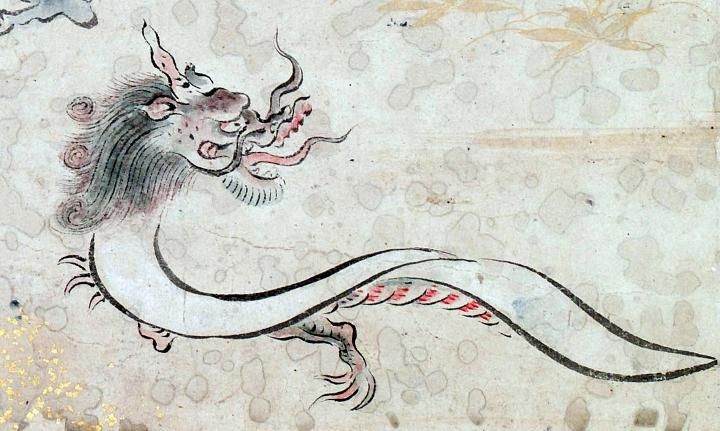

白い布の胴体を持つ龍。角とひげが生えている。口を大きく開き、舌を出している。白い布の下から蛇腹が見えている。
著作者：吉光／出典：親書誌：U426_nichibunken_0057：百鬼ノ図；ヒャッキノズ／日付：2006／資源識別子：U426_nichibunken_0057_0004_0003
Copyright (c)2010- International Research Center for Japanese Studies, Kyoto, Japan. All rights reserved.